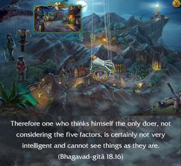

Therefore one who thinks himself the only doer, not considering the five factors, is certainly not very intelligent and cannot see things as they are.

A foolish person cannot understand that the Supersoul is sitting as a friend within and conducting his actions. Although the material causes are the place, the worker, the endeavor and the senses, the final cause is the Supreme, the Personality of Godhead. Therefore, one should see not only the four material causes but the supreme efficient cause as well. One who does not see the Supreme thinks himself to be the doer.